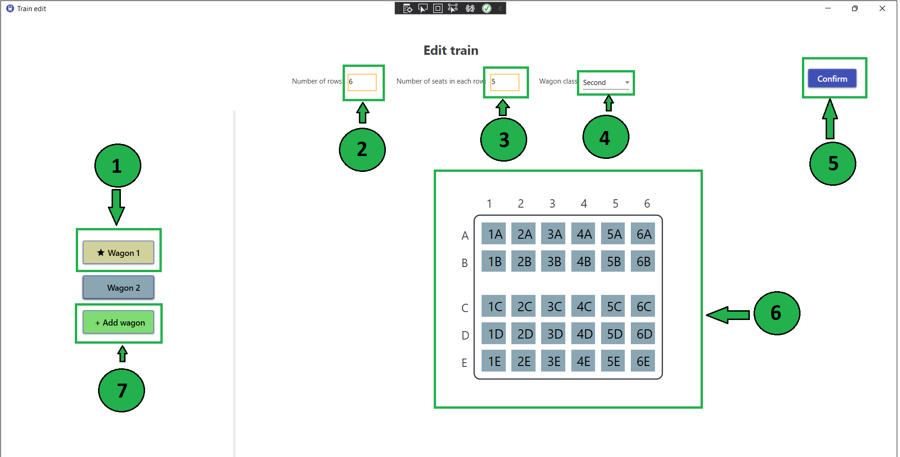

On this page you can edit train that you have selected in previous page. You can add wagons and set their size. You can also change existing wagons.
Select the wagon you want to change by clicking button with wagon number on the left side of the page.
Enter the number of rows in selected wagon.
Enter the number of seats in each row in selected wagon.
Click on the arrow in the corner of the field and choose wagon class.
If you want to apply changes, click on confirm button.
Now, you can see how your wagon will look. The numbers on the horizontal axis represent the row numbers, and the letters on the vertical axis represent the seat marks
If you want to add a new wagon, click button + Add wagon and again, select wagon dimensions as it is shown in previous steps.